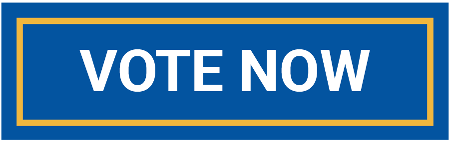

MUTV has seven shows that are always looking for help! We offer multiple ways for students to get
involved in any field they’re interested in. Production, advertising, reporting and event planning are just some of the
opportunities we have to offer.
S T R E A M
MUTV offers a variety of free movies online. New movies are selected each month so you always have something to watch. You can choose from more than 50 options and and 17 genres. And the best part is, they are free. No fee, no wait. Just infinite online streaming, just for you. You can also vote for what movies or genres you want to see.

V O T E
What movies do you want to see? MUTV wants your opinion. Vote on genres and specific movies to get the movie you want to watch instantly. You can be the voice of MUTV's online streaming videos with just a click of a button. Check out the candidates for the movie of the week and newly released films below.

J O I N
Learn more about how to join MUTV today and get a jump start in your journalism career. You will have hands on experience in the journalism field, even before you enter your emphasis area. Learn about the ways to get involved in any of the shows MUTV airs.